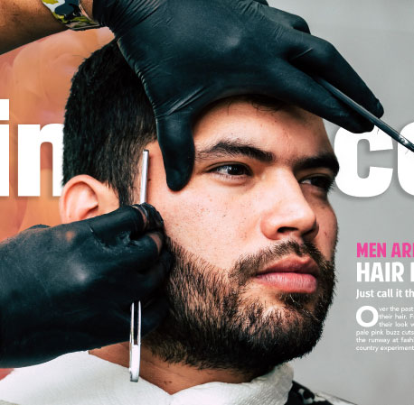

Be bold. Be FINO.
FINO is a bold, daring, and eye catching magazine. Centered around haircare, FINO aims to bring awareness to the changing trends in the men’s grooming sector. Particularly, the trend that motivates men to pop some color and dye their hair without fear of judgment.Through the use of a daring teal, orange, and pink color scheme, FINO magazine points to a new generation of males who want to live BOLD.
Back to portfolio.